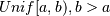

numpy.random.random_sample¶
- numpy.random.random_sample(size=None)¶
Return random floats in the half-open interval [0.0, 1.0).
Results are from the “continuous uniform” distribution over the stated interval. To sample  multiply the output of random_sample by (b-a) and add a:
(b - a) * random_sample() + a
Parameters : size : int or tuple of ints, optional
Defines the shape of the returned array of random floats. If None (the default), returns a single float.
Returns : out : float or ndarray of floats
Array of random floats of shape size (unless size=None, in which case a single float is returned).
Examples
>>> np.random.random_sample() 0.47108547995356098 >>> type(np.random.random_sample()) <type 'float'> >>> np.random.random_sample((5,)) array([ 0.30220482, 0.86820401, 0.1654503 , 0.11659149, 0.54323428])
Three-by-two array of random numbers from [-5, 0):
>>> 5 * np.random.random_sample((3, 2)) - 5 array([[-3.99149989, -0.52338984], [-2.99091858, -0.79479508], [-1.23204345, -1.75224494]])